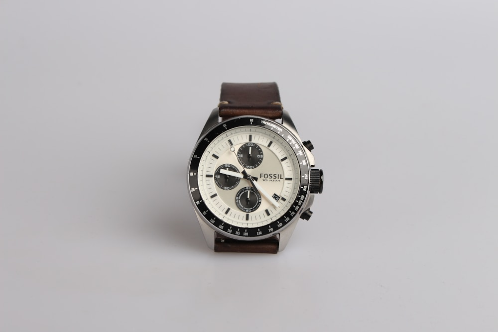

Abraham-Louis Breguet patented the tourbillon in 1801 with a singular purpose: to counteract the effects of gravity on a pocket watch movement. Worn vertically in a waistcoat pocket, the escapement would consistently be in the same gravitational orientation, causing positional errors to accumulate over time. Breguet's genius was to mount the entire escapement and balance wheel within a rotating cage, completing one revolution per minute, thereby averaging out gravitational errors across all positions.
Today, that original mechanical rationale barely applies. Modern wristwatches are worn on a moving wrist, constantly changing orientation. A tourbillon in a wristwatch provides, at best, marginal precision improvements — and even then, only in very specific test conditions. A well-regulated COSC chronometer can beat a tourbillon on a timing machine without breaking a sweat.
"The tourbillon is not about precision. It never truly was. It is about the human desire to tame time itself — and to display that conquest openly on the wrist."
The Theatre of Mechanics
And yet — the tourbillon endures, and not merely as a marketing conceit. There is something profoundly moving about observing a tourbillon in motion. Through the open dial, you witness a miniature cosmos of steel bridges, ruby jewels, and balance springs, all revolving in perfect choreography at sixty turns per hour. The finest examples — Patek Philippe's Reference 5216G, A. Lange & Söhne's Tourbograph Perpetual — are among the most extraordinary mechanical objects ever created by human hands.

The Economics of Desire
A master watchmaker may spend 300 to 600 hours constructing a single tourbillon cage — a component that typically contains 70 to 100 parts and weighs less than 0.3 grams. This investment of human skill and time is not merely reflected in the price; it is the price. When you purchase a tourbillon, you are acquiring centuries of accumulated knowledge, embodied in a space smaller than a fingernail.
From an investment perspective, the calculus is compelling. The most desirable tourbillons from Patek Philippe, A. Lange & Söhne, and F.P. Journe consistently appreciate beyond retail value. At Maison Lumière, we have observed an average appreciation of 18-22% per annum on desirable tourbillon references over the past decade — far exceeding conventional asset classes.
"To own a great tourbillon is to participate in a lineage stretching from Breguet's Paris atelier to the present. It is not nostalgia. It is civilisation."
The Digital Question
The smart watch industry invests billions in features that become obsolete within three years. A tourbillon created in Breguet's original workshop is still ticking today — and will continue to tick long after every computing device manufactured this year has been recycled into obsolescence. In a culture of disposability, the tourbillon represents a radical act of permanence.
This is why, at Maison Lumière, we continue to maintain a waiting list for the most desirable tourbillon references. Demand is not merely sustained — it is intensifying. The more we live in an ephemeral digital world, the more profoundly significant the enduring mechanical world becomes.